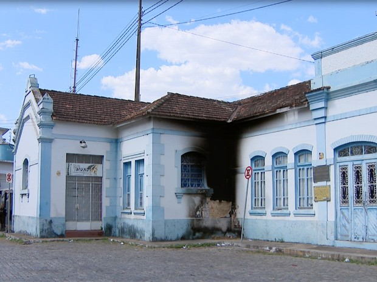
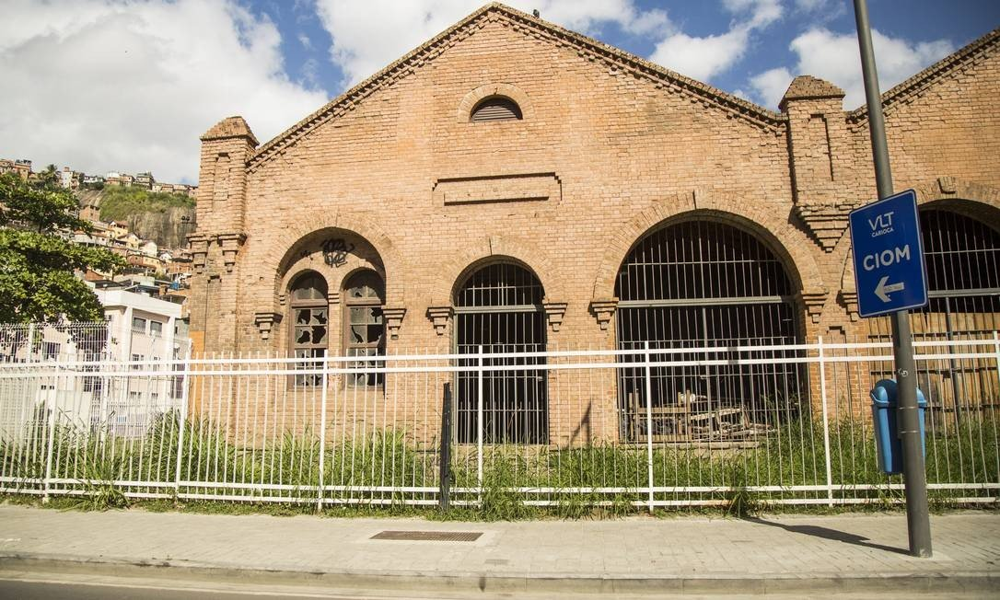
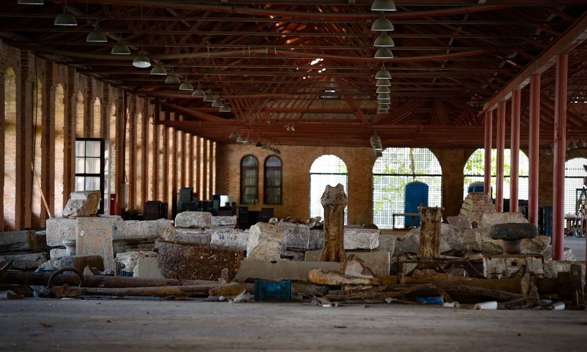
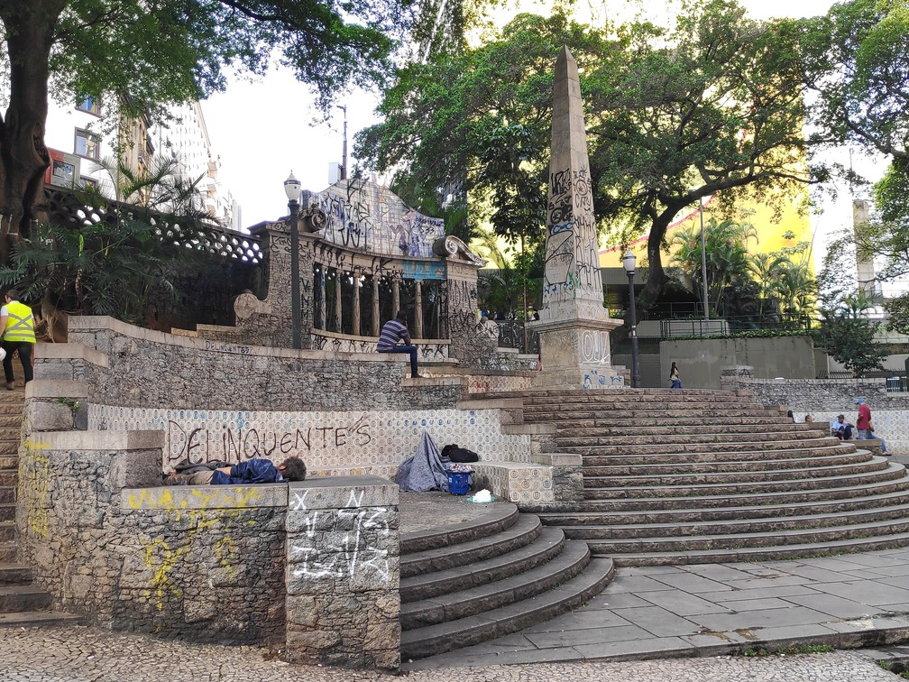
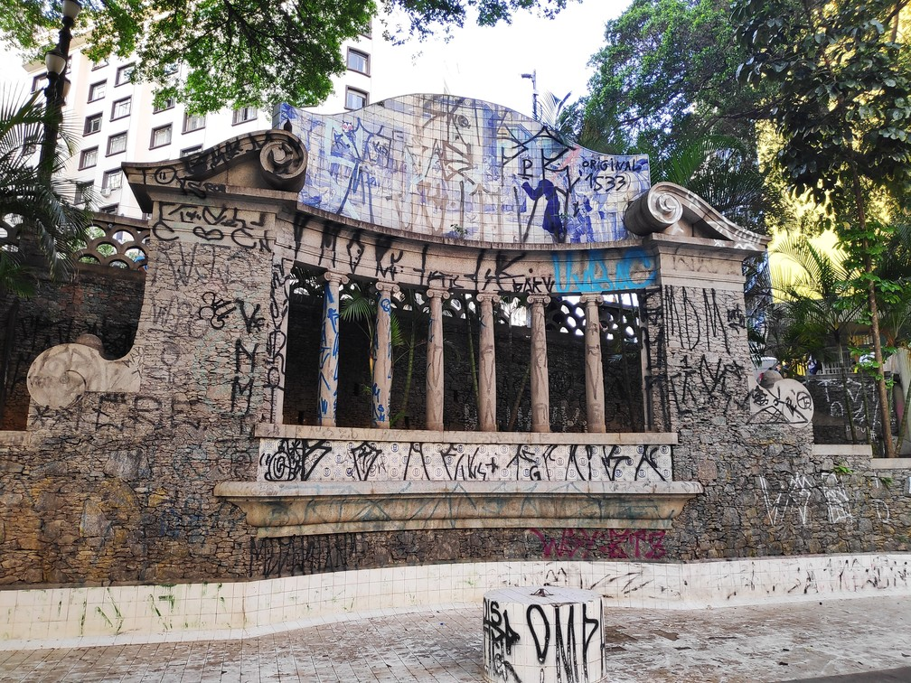

Atos de vandalismo provocam danos ao patrimônio público em Divinópolis
Monumento de praça e prédio da estação estão depredados na cidade


Em Divinópolis, atos de vandalismo registrados nos últimos dias causaram danos ao patrimônio público. Parte das paredes externas do antigo prédio da Estação Ferroviária foi queimada e um monumento da Praça da Rua São Paulo, no Centro, também foi depredado. Segundo a Polícia Militar (PM), este tipo de dano é crime e caso os autores sejam identificados, eles são presos e podem pegar uma pena que varia de seis meses a três anos de prisão. A assessoria de comunicação da Prefeitura informou que a Praça da Rua São Paulo irá receber reparos. Já sobre o antigo prédio da Estação Ferroviária, a assessoria informou que é de responsabilidade de VLI. A assessoria da VLI negou que os reparos no prédio seja de responsabilidade da empresa e disse que ele pertence à União.
Sete anos após escavações, objetos achados no Cais do Valongo estão em caixas e correm risco
Esse material tem grande valor arqueológico e não faz sentido deixar tudo fechado', afirma Sérgio Suiama, procurador da República, que luta para que material fique sob tutela da Uerj, e não do município
RIO — Um patrimônio histórico, que ajuda a contar um pouco da chegada de africanos escravizados ao Brasil, pode estar ameaçado. Cerca de 1,3 milhão de peças encontradas no sítio arqueológico do Cais do Valongo durante as obras de revitalização da Zona Portuária estão ainda, sete anos depois das escavações, encaixotadas em um galpão na Gamboa. Sem qualquer tipo de manutenção, o acervo — que tem cachimbos, contas de colar, anéis de piaçava, além de pedras, pedaços de cerâmica e búzios de várias espécies — estaria em risco, segundo arqueólogos que têm acesso ao local. Já entrou água em parte das caixas e foi constatada a presença de mofo e ferrugem em alguns objetos. Após receber denúncia de especialistas, a Polícia Federal instaurou, em maio, um inquérito para apurar a possível deterioração da memória da escravidão no Rio.
O Ministério Público Federal e a Universidade do Estado do Rio de Janeiro (Uerj) também tentam salvar o material e querem que pelo menos parte do acervo, hoje sob responsabilidade da prefeitura, seja levada para a universidade. A ideia é que pesquisadores tenham acesso a tudo que está empacotado.
Monumento mais antigo de São Paulo sofre com falta de zeladoria 
O monumento mais antigo da cidade de São Paulo, localizado no Largo da Memória, próximo à Estação Anhangabaú do Metrô e do Terminal Bandeira, sofre com a falta de cuidado e manutenção.
O local, que já foi considerado a “porta de entrada” da cidade, está com sua estrutura bastante deteriorada. Não é possível ver danos estruturais ao obelisco, mas as pichações chamam a atenção. São diversas pinturas em todo o complexo do largo: do obelisco ao pórtico de azulejos.
Em nota, a Secretaria Municipal de Cultura informou que o Obelisco e o Largo da Memória são tombados e se encontram como prioridade no Programa “Adote uma Obra Artística”. São realizadas limpezas diárias no piso, escadaria e fonte.
“O obelisco necessita de limpeza complexa, por meio de equipamentos especiais, e com frequência recomendável a cada dois meses para não deteriorá-lo. Por isso, a última ação de zeladoria neste monumento foi realizada no início de agosto e a próxima está prevista para outubro”, disse em nota a pasta.